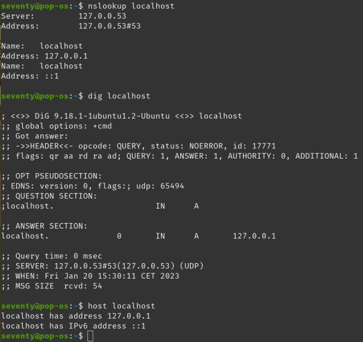
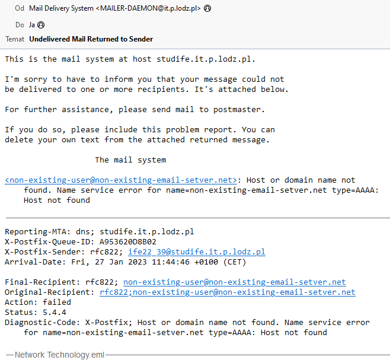

All are included here: here
Most important are:
.com (commercial)
.gov (government)
.edu (educational)
.net (network)
.org (organization)
.mil (military)
.int (international)
.biz (business)
.info (information)
.pro (professional)
and country specific
DNS uses a tree-like structure. At the top of the hierarchy is the root domain represented by a dot (.). Below the root domain are the top-level domains such as above. These TLDs contain information about second-level domains which are unique domain names registered by individuals or organizations. Second-level domains can contain subdomains such as www, these are the third-level domains.
A DNS query is a request for ip adress of a website from a DNS server. DNS server checks its cashe to find the adress in question, if it's not found i sends request to the root server. It in turn forwards request to the server responsible for that level of the domain. It then sends the package further to the authoritative name server, witch return the ip.
DNS delegation is the process of assigning responsibility for a subdomain to another DNS server. It allows for dividing a domain's DNS namespace into smaller, more manageable units.
A DNS record is a set of information that is stored on a DNS server and used to map a domain name to an IP address or other information. There are several types of DNS records, including A records, which map a domain name to an IP address, MX records, which specify the mail servers for a domain, and CNAME records, which create an alias for a domain name.
Reverse DNS is the opposite process of DNS, it resolves an IP address to a name. It's used to associate a hostname with an IP address, in other words, it maps an IP address back to a domain name. It's mostly used for troubleshooting and for email delivery.
Authoritative DNS answer is a response to a DNS query that comes from a server that is designated as an authoritative source, meaning it has the most up-to-date and accurate information about the domain. A non-authoritative DNS may not be as accurate or up-to-date.
A DNS resolver is a server that is contated when trying to resolve a website name. It is most often controlled by internet service provider. It check it's local cashe first, if adress is not found, it forwards the request further.
A DNS cache, is a temporary storage area for DNS query results. It is used to speed up the process of resolving domain names to IP addresses.
POP3 (Post Office Protocol version 3) is a protocol for retrieving email messages from a mail server. POP3 downloads messages and deletes them
from the server, therefore it is best used for users who only need to check their email from one device. Some basic commands used in POP3 include:
USER: specify the username for the email account.
PASS: provide the password for the email account.
STAT: retrieve the number of messages in the mailbox, along with the total size of all messages.
LIST: retrieve a list of all messages in the mailbox, along with their size.
RETR: retrieve a specific message from the mailbox.
DELE: delete a specific message from the mailbox.
QUIT: log out of the email account and terminate the POP3 session.
IMAP (Internet Message Access Protocol) is a standard protocol for accessing and managing email messages on a remote mail server. It allows
for synchronising folders and does not remove messages from the server. Messages are localy cashed insted of downloaded. It is better suited
for use on multiple divaces then POP3.
The basic IMAP commands include:
LOGIN: Used to authenticate the user with the mail server
SELECT: Used to select a mailbox (such as Inbox or Sent Items) for further operations
FETCH: Used to retrieve specific messages or parts of messages from the mailbox
SEARCH: Used to search for messages matching certain criteria
STORE: Used to modify flags or labels associated with messages
COPY: Used to copy messages to another mailbox
EXPUNGE: Used to permanently delete messages from the mailbox
LOGOUT: Used to terminate the IMAP session
SMTP (Simple Mail Transfer Protocol) is a standard protocol for sending email messages over the internet.
SMTP is a core protocol that enables the sending of email messages over the internet. It is typically used in conjunction
with other protocols such as POP3 and IMAP to provide a complete email service.
The basic SMTP commands include:
HELO: Used to introduce the client to the server
MAIL FROM: Used to specify the sender's email address
RCPT TO: Used to specify the recipient's email address
DATA: Used to send the email message itself
QUIT: Used to terminate the SMTP session
NNTP (Network News Transfer Protocol) is a protocol used for distributing, reading, and posting news articles on the Internet. It is used by news servers to communicate with each other and with news clients that allow users to read, and reply to articles. NNTP uses a simple text-based format for messages, and is typically transmitted over TCP port 119.
An email mailbox is a location on a mail server where an individual's email messages are stored.
An email mailbox on a POP server is typically a single file on the server's file system, while an email mailbox on an IMAP
server is typically stored in a database.
A mailbox can have several parameters like
Size: The amount of disk space allocated for the mailbox.
Quota: The maximum amount of disk space that can be used by the mailbox.
Retention: The amount of time that email messages will be kept in the mailbox before they are deleted.
An email alias is an alternate email address that is associated with a mailbox.
An email address is a unique identifier that is used to deliver email messages to a specific mailbox. It typically consists of two parts:
the local-part, which is the name of the mailbox, and the domain, which is the name of the domain where the mailbox is located. For example,
in the email address "john@example.com", "john" is the local-part and "example.com" is the domain.
An email message is made up of two main parts: the header and the body.
The header is the section of the email that contains the meta-data of the message, such as the sender, recipient, subject, and date. It also contains routing information such as the message's ID and any other information used by the email servers to route the message. The header is separated from the body by a special separator called the "header separator".
The body is the section of the email that contains the actual content of the message, such as the text or attachments.
Email coding refers to the process of encoding the content of an email message so that it can be transmitted over the Internet.
This is necessary because emails can contain various types of data, such as text, images, and attachments, which need to be
converted into a format that can be understood by email servers and clients.
MIME (Multipurpose Internet Mail Extensions) is the most common standard used for email coding. It allows emails to include
different types of data by specifying the type of data in the email header.
MIME also allows for email attachments. When it is added to an email, the file is encoded and packaged with the email in a format
specified by MIME, which includes information about the type of file, its size, and its name. When the email is received, the attachment is decoded and presented to the user as a separate file.
A mailing list is a group of email addresses used to send messages to multiple recipients at once.
An email gate is a program or service that facilitates the operation of a mailing list. It is responsible for managing
the membership of the list, handling incoming messages, and forwarding messages to the members of the list. There are
different types of email gates, for exaple one that gives ability to subscribe and unsubscribe from the list.
Email security refers to the various measures that are used to protect the confidentiality,
integrity, and authenticity of email messages. There are a number of different security technologies
and protocols that can be used to secure email, including SSL, TLS, PGP, and email signatures.
SSL (Secure Sockets Layer) and TLS (Transport Layer Security) are encryption protocols that are used
to secure email transmissions between email servers.
PGP (Pretty Good Privacy) is a encryption method that can be used to encrypt email messages on a
per-message basis. PGP uses a key-pair encryption.
Email signature is a way to include a digital signature in email. It contains the sender's public key and other information that can be used to
verify the identity of the sender. A digital signature is created by encrypting a hash of the message
with the sender's private key, and can be verified by decrypting the signature with the sender's public key.
Email spam, also known as unsolicited bulk email (UBE), is unwanted email that is sent in large quantities
to a large number of recipients. Spam can be used for a variety of purposes, such as advertising, phishing, or spreading malware.
Blacklists are lists of IP addresses or domain names that are known to be associated with spam. Mail servers
can use blacklists to block incoming email from known spam sources.
Graylists are a way to temporarily block incoming email from a sender, in order to determine if the sender is
legitimate. Graylisting works by temporarily rejecting an email from an unknown sender, and accepting it only
after the sender retries to deliver the message, which is a behavior legitimate senders typically do.
Spam filtering is the process of automatically identifying and removing spam from incoming email. There are a
variety of techniques that can be used, including pattern matching, machine learning, blacklists and graylists.
Domain names and corresponding IP addresses of computers in lodz.pl domain:
A computer somewhere in Europe, outside Lodz and find all the available information about DNS settings of this computer:
A computer somewhere outside Europe (eg. Exotic country) and find all the available information about DNS settings of this computer:
Verify DNS assignment for localhost:
Flush dns memory on your computer using ipconfig:
Change the file hosts in such a way that when you enter ifeXX.com the website msn.com will display:
Firstly we need to find hosts file, which is located in C:/Windows/System32/drivers/etc
non-existent mail server
non-existent user on an existent e-mail server
a server which is not an e-mail server